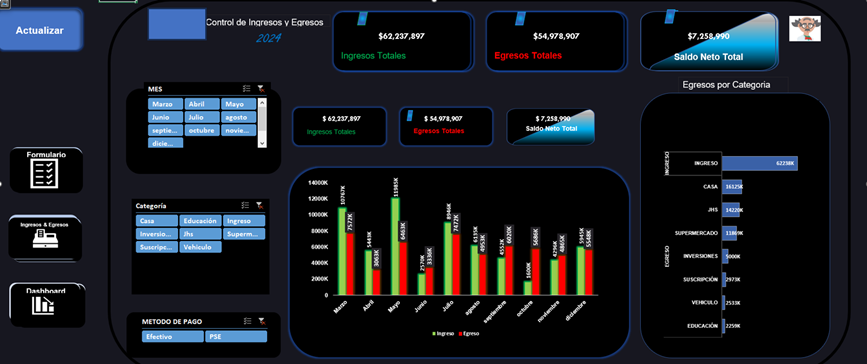

Dashboards en Excel
Visualiza tus datos de forma clara y profesional
Visualiza tus datos de forma clara y profesional
Un dashboard en Excel es un panel visual que permite resumir grandes volúmenes de información para facilitar la toma de decisiones.

← Volver al índice de artículos